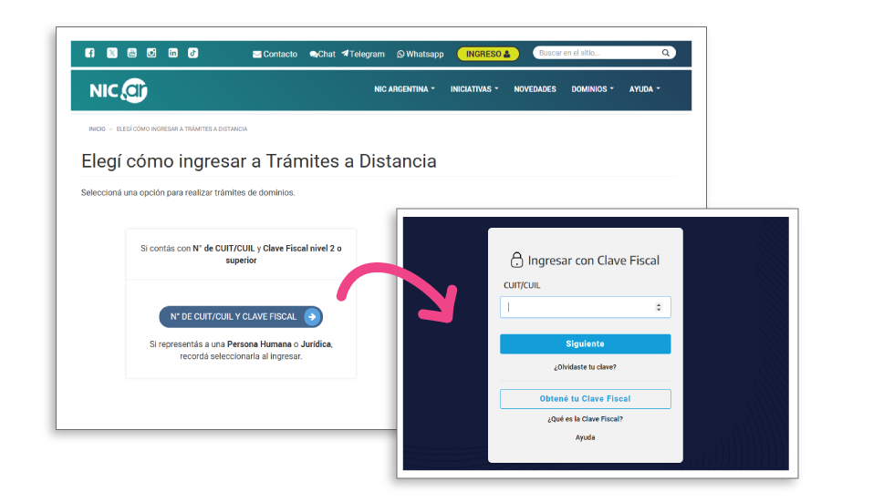
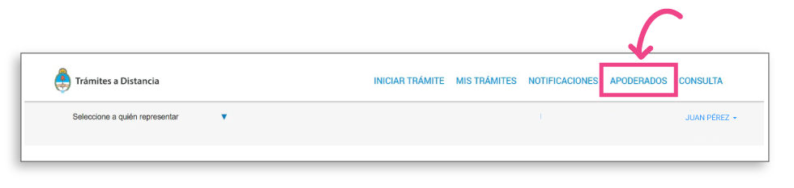
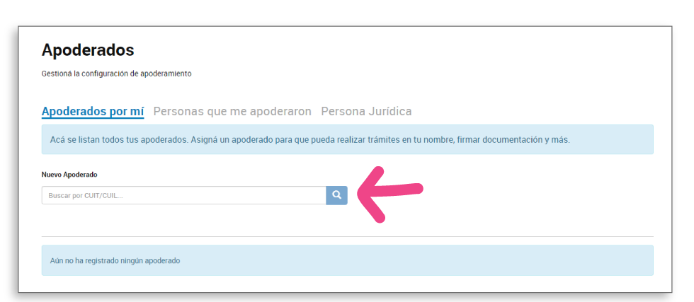
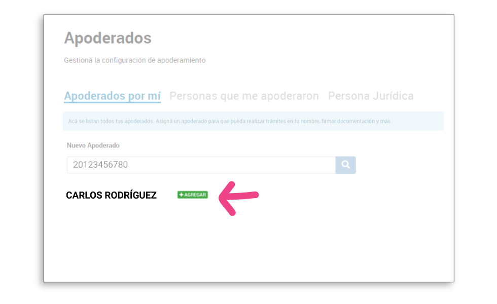
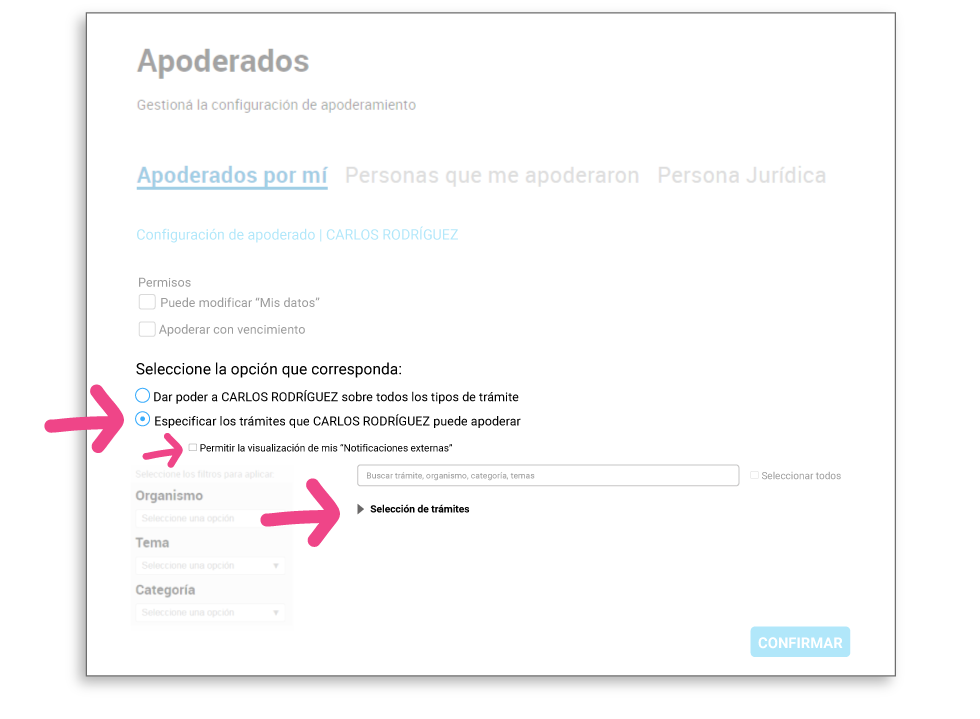
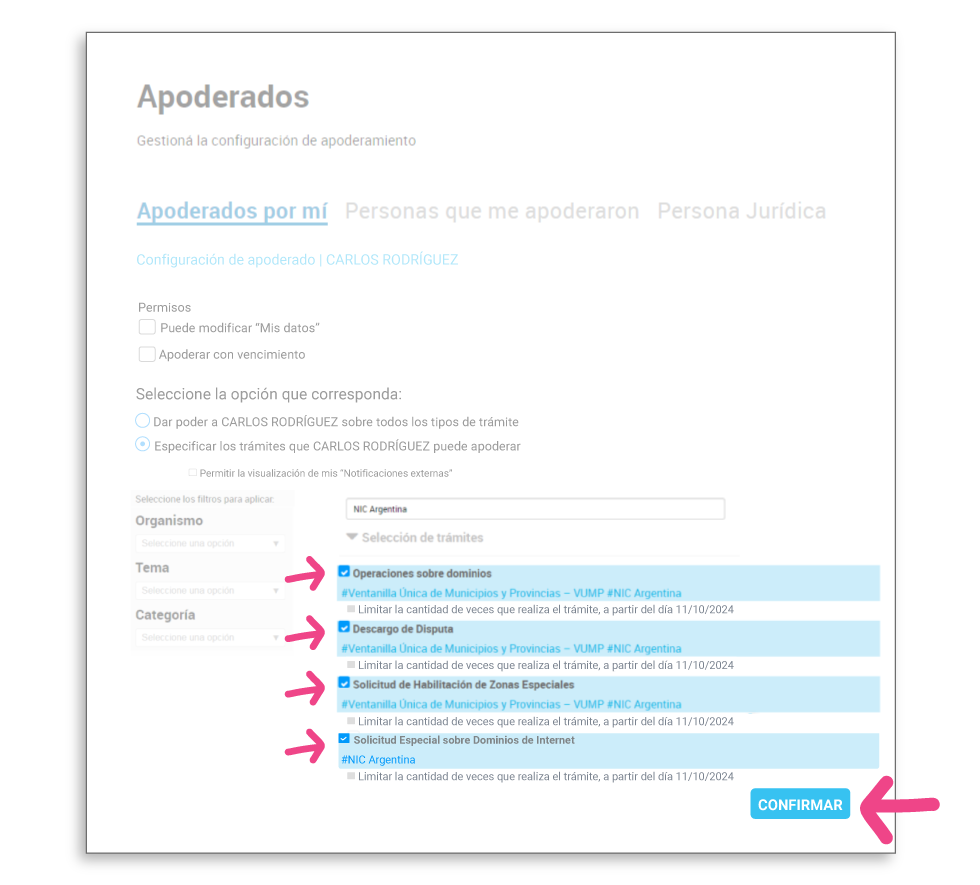

Para que tu página tenga su dirección propia (por ejemplo tunegocio.com.ar), necesitamos que nos des permiso una sola vez. Son 7 pasos cortos y después no tenés que hacer nada más.
La dirección queda a tu nombre. Tu clave no se la pasás a nadie: la escribís vos.
Si preferís no hacerlo solo, escribinos y lo hacemos juntos por videollamada.
Tocá este link: nic.ar/ingreso
Tocá el botón N° de CUIT/CUIL y Clave Fiscal.

Escribí tu CUIT y tu clave fiscal, igual que cuando entrás a ARCA.
Está en el menú de arriba.

En el buscador que dice Apoderados por mí, pegá el número del principio (20-36319384-7) y tocá la lupa.

Va a aparecer el nombre Marcos David Szydlo. Tocá Agregar.

Tildá la casilla Permitir la visualización de mis Notificaciones Externas.
Lo demás dejalo como está.


Mandanos un WhatsApp y del resto nos ocupamos nosotros: registramos la dirección a tu nombre, la conectamos con tu página y la renovamos cada año.
El costo del dominio lo cobra NIC Argentina y lo incluimos en tu presupuesto.
No pasa nada. Escribinos y lo terminamos juntos!
Capturas: NIC Argentina (licencia Creative Commons BY 2.5 AR).